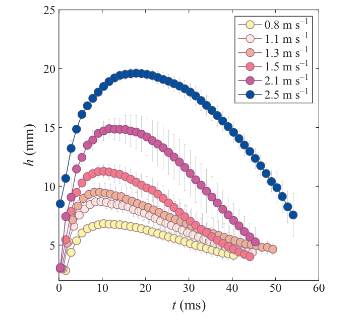

平板竖直入水后，什么决定液片的高度和边缘厚度？
实验分别追踪液片和它的边缘。局部毛细长度能描述边缘厚度，壁面附近的黏性耗散则有助于解释液片上升减速。
Dynamics of a liquid lamella during vertical impact of a solid plate
问题背景
固体撞击液面时常出现 ejecta sheet、splash wave、crown breakup 等现象。已有研究较多关注球体/圆盘入水、液滴撞击或薄片破碎，但“竖直平板进入液池后，液体沿固体表面向上形成 lamella”的局部动力学仍不清楚。这里的几何很特殊：液片贴着一块向下运动的竖直固体表面上升，不发生明显脱离或 cavity，因此固壁附近边界层与自由表面 rim 同时参与。
作者要回答三个问题：
- 撞击速度和板厚如何改变液膜高度
h(t)？ - 液膜顶部 rim 的厚度
e(t)是否由毛细、重力、惯性或黏性控制？ - 整体液膜高度的减速来自毛细回缩、重力、空气阻力，还是固壁边界层黏性耗散？
实验设计
实验用线性电机驱动 acrylic vertical plate 竖直进入水槽。水槽尺寸为 50 cm x 50 cm x 80 cm，水深 40 cm。平板前缘做成圆柱形曲面，避免尖锐前缘导致液膜分离。
主要参数：
- 平板厚度
Do = 5-20 mm。 - 平板宽度
L = 7 cm。 - 撞击速度
Uo = 0.8-2.9 m/s。 - 高速摄影：Photron Nova S16，
16000 fps，1024 x 1024，空间分辨率约20 um/px。 - 空气流场：油滴示踪，约
1 um；532 nm激光片做 PIV。 - 无量纲范围：
We = 44-2500，Bo = 3-54，Ca = 0.01-0.04，Re = 4e4-6e4。 - 亚克力静态接触角
θa < 79°。本文只考察液片不从固体表面脱离的速度范围。
测量量包括：
h(t)：液膜从未扰动水面向上的高度。e(t)：顶部 rim 厚度。λ(t)：rim 指状结构相邻 finger 的平均波长。- 空气流场：用于估计液片和固壁之间空气层对液膜的阻力项。
图表逐图解读
Fig. 1：实验几何和现象定义
Fig. 1(a) 给出平板入水示意图，定义 Do、L 和 Uo。Fig. 1(b) 是 Do = 10 mm、Uo = 2.5 m/s 的时间序列，时间从 1.4 ms 到 50.8 ms。液膜先沿固壁快速上升，顶部 rim 变厚并出现 finger，达到最大高度后回落。
这张图的作用是明确本文讨论的 lamella 不是自由飞出的 splash sheet，而是贴着运动固壁上升的液膜。后续所有模型都依赖这个几何边界：靠固壁的一侧有黏性边界层，顶部 rim 又有类似自由液片的毛细回缩。

Fig. 2：撞击速度越大，液膜越高且上升更快
Fig. 2 展示 Do = 10 mm 时不同 Uo 下 h(t) 的变化。随着 Uo 从 0.8 m/s 增至 2.5 m/s，最大高度显著增加，上升阶段斜率也增大。每个点有十次实验的标准差误差棒。
重要的是：h(t) 的形状并不只是惯性抛射后受重力减速。液膜在几十毫秒内达到最大高度，后续模型表明主导减速项不是 g，而是固壁边界层中的黏性阻力。
Fig. 3：rim 厚度由局部瞬时毛细长度控制，finger 波长随速度减小
Fig. 3(a) 显示 rim 厚度 e(t) 随时间增长，并且在更高 Uo 下 rim 更薄。作者用局部瞬时毛细长度解释 rim 厚度：
e ~ lc = sqrt( sigma / [ rho (|-hddot| + g) ] )
这里 |-hddot| + g 是 rim 所感受到的有效加速度。Fig. 3(b,c) 显示 e/lc ≈ 1，且不需要拟合参数。这说明 rim 的横向尺度主要由毛细-惯性/有效重力平衡给出。
Fig. 3(d) 统计 finger 的平均波长 lambda_bar。finger 在早期产生，之后相互合并，所以同一次实验中 lambda_bar 随时间增大；但不同实验之间，Uo 越大，finger 产生越早、数量越多、平均波长越小。作者把这归因于更大的 Uo 使 h_dot 更大，rim destabilisation 更快，同时 e 更薄。
这部分最值得注意的分区结论是：rim 附近黏性可忽略。作者估算 Do = 10 mm 时初始 rim 厚度 eo ≈ 0.5 mm，毛细-惯性时间 τc ≈ 1.3 ms，黏性时间 τν ≈ 250 ms，因此 rim 约束主要来自毛细，而不是黏性。
Fig. 4：一维控制体模型显示液膜高度由黏性项主导
作者建立一个一维控制体模型，忽略 rim 形成细节，假设液膜厚度 e 近似常数，且沿竖直方向无压力梯度。质量守恒给出从液池进入液片的速度 v1 = h_dot。
模型保留四类力：
- 毛细项：
Fc = sigma cos(theta_D)。 - 固壁边界层黏性项：边界层厚度
delta ~ sqrt(nu t)，剪切应力给出与h_dot + Uo相关的阻力。 - 空气项：固壁和液片之间的薄空气层受到挤压/拖曳，估计为与
rho_a ca和h_dot + Uo相关。 - 重力项：
-rho e h g。
最终的高度方程可写成：
hddot =
sigma cos(theta_D)/(rho e h)
- alpha (e/h) sqrt(nu/(pi t)) (h_dot + Uo)
- beta (rho_a/rho) ca sqrt(2 pi gamma) (1/h) (h_dot + Uo)
- g
其中 alpha 和 beta 是数量级修正系数，由最小二乘得到 alpha ≈ 5、beta ≈ 2.5。模型中使用 theta_D = 130°，Do = 10 mm 时 eo = 0.5 mm，Do = 20 mm 时 eo = 0.7 mm。
Fig. 4(c) 显示模型能预测上升阶段和早期下降阶段，但在后期下降阶段明显偏离实验。作者认为原因包括：e 实际上随时间变化；下降过程与上升过程的空气相互作用不同；模型是一维的，没有包含液膜厚度演化。
Fig. 4(d,e) 将各项贡献拆开比较。结论是：液膜高度方向的主导减速项是固壁边界层中的黏性耗散；毛细项和重力项相对可忽略，空气项通常较小但在某些早期情形下不可完全忽略。作者还指出，黏性项和空气项的量级区分并不总是很干净，因为二者比值近似为 Fnu/Fa ≈ 0.6 alpha/beta，但拟合分解仍显示黏性项主导。
Fig. 5：最大高度和达到时间按黏性时间/长度折叠
Fig. 5(a) 显示最大高度 hmax 和达到最大高度的时间 tmax 近似线性相关，并且二者随 Uo 和 Do 增大而增大。
作者基于黏性主导结论定义：
tau_nu = eo^2 / nu
l_nu = Uo tau_nu = Uo eo^2 / nu
其中初始 rim 厚度取 eo = 0.32, 0.5, 0.85 mm，分别对应 Do = 5, 10, 20 mm。Fig. 5(b) 中 hmax/l_nu 与 tmax/tau_nu 的数据发生折叠，最大高度大致满足：
hmax ≈ 0.03 l_nu
tmax/tau_nu 也落在相近范围，但作者没有给出一个同样明确的常数关系；高 Uo 下它略有增加，可能因为高速度时早期 eo 变薄，而实验分辨率无法准确捕捉。
主要机制判断
机制 1：rim 与整体液片不是同一个主导平衡
这篇最重要的物理信息不是某个单一公式，而是空间分区：
- 顶部 rim：由毛细、惯性和有效加速度控制，
e ~ lc。 - 整体高度
h(t)：由固壁边界层黏性耗散控制。 - finger 波长：受 rim destabilisation 和后期合并共同影响，不能只用单一 Rayleigh-Plateau 波长解释。
因此，若只看自由表面形态，很容易把液膜运动误判为“毛细回缩主导”；但高度方程和实验折叠显示，液片作为整体沿固壁运动时，固壁边界层是关键。
机制 2：空气项不是完全没有，但不是本文主导解释
作者专门做了空气 PIV，并在模型中加入空气层阻力。模型估算表明空气项可能与黏性项处于相近数量级，尤其在早期；但从 Fig. 4 的项分解看，黏性项对 h(t) 的贡献更稳定、更主导。这个结论需要谨慎引用：不是“空气不重要”，而是“在本文水-亚克力平板、未分离液片、Uo = 0.8-2.9 m/s 的范围内，空气项不是解释最大高度和主要减速的首要项”。
机制 3：黏性标度来自初始 rim 厚度
tau_nu = eo^2/nu 和 l_nu = Uo eo^2/nu 使用的是初始 rim 厚度，而不是板厚本身。板厚 Do 通过影响 eo 间接进入标度。这个处理对后续建模很重要：几何参数不是直接进最终规律，而是先决定局部初始液膜/边缘厚度。
局限与可疑点
- 模型假设
e常数，但实验中 rim 厚度和液膜形态明显随时间变化；这也是后期下降阶段偏离实验的主要原因。 - 模型是一维的，不能解析 finger 合并、横向流动和 rim 形态演化。
alpha、beta是拟合常数，不是从封闭理论直接预测；因此模型更适合做物理分解和标度解释，而不是完全无参数预测。- 空气项和黏性项的量级分离并不非常强，作者也承认二者难以完全区分。
- 实验只覆盖液片不发生分离的速度范围。若进入 splashing、cavity 或 wetting failure regime，结论可能改变。
eo在高Uo下可能更薄，但受空间分辨率限制，作者对每个Do使用相同eo；这会影响tau_nu和l_nu的折叠精度。
可复用公式
局部瞬时毛细长度：
lc = sqrt( sigma / [ rho (|-hddot| + g) ] )
rim 厚度标度：
e ~ lc
黏性时间和长度：
tau_nu = eo^2 / nu
l_nu = Uo tau_nu = Uo eo^2 / nu
最大高度经验关系：
hmax ≈ 0.03 l_nu
一维高度方程的结构：
hddot = capillary - wall-viscous-boundary-layer - air-layer-resistance - gravity